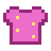
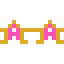
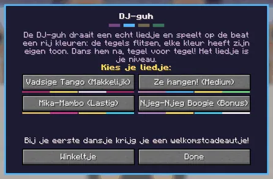

Dance 'Simon says' to the beat of four songs with the DJ guh.
Dans 'Simon zegt' op de beat van vier liedjes bij de DJ-guh.
Guhdisco
The Guhdisco is a rare pink club in the Guhmension, with a giant guh face as its front, set in big grounds (96x84) with a neon DISCO arch, a shake terrace and a stable to park your guh. Talk to the DJ Guh in the mouth of the big guh head on the stage and dance Simon says: the tiles flash in a row of colours, each with its own note, and you step on the same colours in the same order. Every round adds one colour and gets faster. One wrong step (or waiting too long) and the music stops: no second chances! You need no items, and you can't get hurt or hungry while dancing. You earn disco coins (from 3 colours: 1 per 2 colours plus 1, and extra from 10 and 15 colours). After every game the chat shows your personal record, and the best dancers of the world stand on the floating top 3 above the stage. Spend your coins on the disco outfit (glitter vads suit, groovy afro, star glasses), which you can only get here. VAHOEG!
De Guhdisco is een zeldzame roze club in de Guhmensie met een reuzeguhgezicht als voorgevel. Hij staat op een groot terrein (96x84) met een neon DISCO-boog, een shaketerras en een stal om je guh te parkeren. Praat met de DJ-guh in de mond van de grote guhkop op het podium en dans 'Simon zegt': de tegels flitsen een rij kleuren, elk met een eigen toon, en jij stapt op dezelfde kleuren in dezelfde volgorde. Elke ronde komt er een kleur bij en gaat het sneller. Een verkeerde stap (of te lang wachten) en de muziek stopt: geen tweede kans! Je hebt niks nodig, en tijdens het dansen krijg je geen honger of schade. Je verdient discomunten (vanaf 3 kleuren: 1 per 2 kleuren plus 1, en extra vanaf 10 en 15 kleuren). Na elk potje zie je in de chat je persoonlijk record, en de beste dansers van de wereld staan in de zwevende top 3 boven het podium. Besteed je munten aan het discopakje (glittervadspak, vahoege afropruik, sterren-discobril), dat je alleen hier krijgt. VAHOEG!




The song is the levelHet liedje is het niveau
The DJ-guh now plays real songs, and the dance floor follows the beat: the colours flash exactly on the beat, and the tempo no longer speeds up. It gets harder with longer rows and double counts. Pick your song, and with it your level:
De DJ-guh draait nu echte liedjes, en de dansvloer volgt de beat: de kleuren flitsen precies op de tel, en het tempo gaat niet meer omhoog. Het wordt moeilijker door langere rijtjes en dubbele tellen. Kies je liedje, en daarmee je niveau:
| SongLiedje | LevelNiveau | BPMBPM | |
|---|---|---|---|
| Vadsige Tango | makkelijkmakkelijk | 100 | Slow, dramatic and very vads: bandoneon, pizzicato bass and the guhs singing the melody. Starts with one colour, never double counts.Langzaam, dramatisch en heel erg vads: bandoneon, pizzicato-bas en de guhs die de melodie zingen. Begint met één kleur, nooit dubbel tellen. |
| Ze hangen aan me vet (70's) | mediummedium | 110 | A 70's disco version of the guh record Ze hangen aan me veh, with the whole text sung: "Ze hangen aan me vet, omdat ik vadsig ben..." Also the music in the club when nobody dances.Een 70's discoversie van de guhplaat Ze hangen aan me veh, met de hele tekst gezongen: "Ze hangen aan me vet, omdat ik vadsig ben..." Ook de muziek in de club als er niemand danst. |
| Mika-Mambo | lastiglastig | 140 | Clave, cowbell, congas and brass, with the Mikas giggling as the choir. Starts with three colours, double counts from row 6.Clave, koebel, conga's en blazers, met de giechelende Mika's als koortje. Begint met drie kleuren, dubbel tellen vanaf rij 6. |
| Njeg-Njeg Boogie | bonus, own boardbonus, eigen bord | 128 | Boogie-woogie piano on a disco beat, and guhs singing njeg-njeg!Boogiewoogie-piano op een discobeat, en guhs die njeg-njeg! zingen. |
Every song has its own palette and records, the floating board shows all four, and the song loops as long as you dance. The DJ shop now also sells the discokoptelefoontje (6 discomunten) for your guh's ears.
Elk liedje heeft eigen kleuren en records, het zwevende bord laat ze alle vier zien, en het liedje gaat door zolang je danst. Het DJ-winkeltje verkoopt nu ook het discokoptelefoontje (6 discomunten) voor de oortjes van je guh.

Prizes: clothesPrijzen: kleding
- Glittervadspak 10 discomunten
 Vahoege afropruik 6 discomunten
Vahoege afropruik 6 discomunten- Sterren-discobril 4 discomunten
 Discokoptelefoontje 6 discomunten
Discokoptelefoontje 6 discomunten
Highscores in the GuhdexHighscores in de Guhdex
- Vadsige Tango (makkelijk)
- Ze hangen aan me vet (medium)
- Mika-Mambo (lastig)
- Njeg-Njeg Boogie (bonus)
See alsoZie ook
 GuhdiscoStructuresBouwwerken
GuhdiscoStructuresBouwwerken DJ-guhCharactersPersonages
DJ-guhCharactersPersonages Clothing set: De GuhdiscoKledingset: De GuhdiscoClothesKleding
Clothing set: De GuhdiscoKledingset: De GuhdiscoClothesKleding